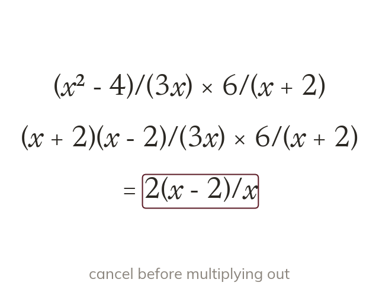
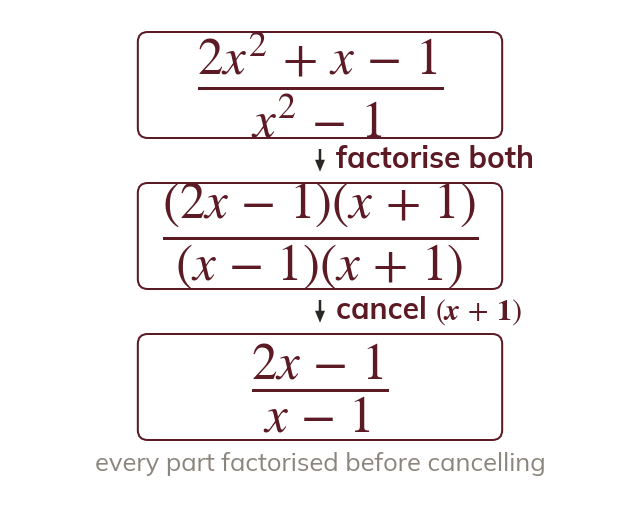
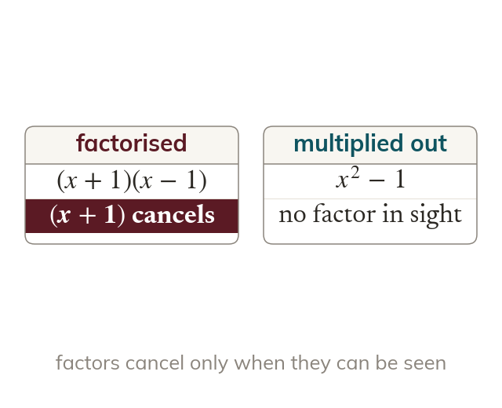

Factorise, cancel, then multiply
Factorise every numerator and denominator. Cancel common factors across both fractions, then multiply what is left.
Multiplying and dividing algebraic fractions follows the same rules as number fractions. Today we factorise every part first, so the common factors cancel before anything is multiplied.
Work down the page at your own pace. Write every answer in your book first, then click to check it.
Read each card, then follow the worked examples one step at a time.

Factorise every numerator and denominator. Cancel common factors across both fractions, then multiply what is left.
Dividing by a fraction is multiplying by its reciprocal. Flip only the second fraction.
Pick an answer. If it's wrong, the feedback tells you which mistake it was.
Read each card, then follow the worked examples one step at a time.

Non-monic quadratics factorise into two brackets too. Factorised, the common brackets can be seen and cancelled.

Expanding the tops and bottoms hides the factors. Keep everything factorised until the end.
Pick an answer. If it's wrong, the feedback tells you which mistake it was.
Finished? Next lesson: 11H.3.5 Adding Fractions with Number Denominators.
Log in, then search for a code to practise that skill.
Videos, worksheets and more on each part of this lesson.